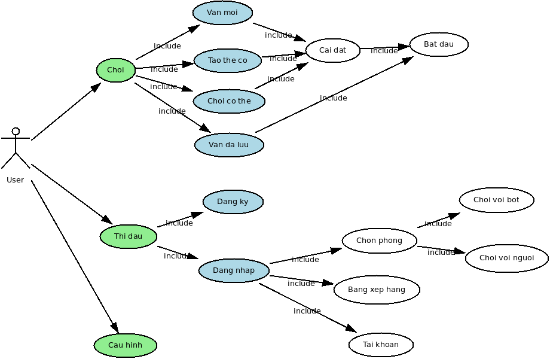
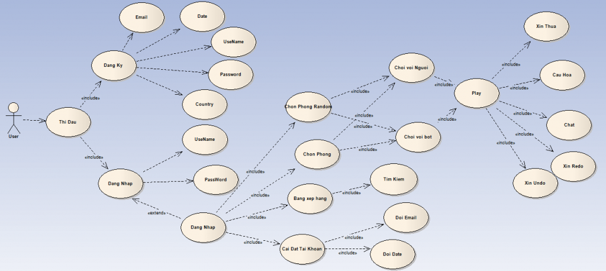

Khảo sát, đặc tả yêu cầu
Phát biểu bài toán
Xây dựng chương trình chơi cờ tướng
Chức năng hệ thống
Chức năng chơi cờ
- Cho phép chơi với máy (tất nhiên)
- Mức độ khó xác định bởi 3 thuộc tính: Tấn công, phòng thủ, kinh nghiệm (kinh nghiệm ít thì cờ vồ nhiều hơn).
- Cho phép 2 người chơi với nhau
- Cho phép undo, redo, hint, save, load game,...
- Cho phép chơi ở chế độ Tournament (tổ chức luật chơi giống các giải quốc tế)
- Cho phép chơi online và có hệ thống tính điểm (giống ngoài đời)
- Cho phép chơi qua mạng internet
Chức năng chương trình
- Có khả năng tự động cập nhật khi có phiên bản mới
- Hỗ trợ nền tảng PC
- Hỗ trợ các nền tảng di động phổ biến như Android, iOS, Windows Phone
Tính khả thi về mặt kĩ thuật và công nghệ
- Ngôn ngữ lập trình:
Java, C - Objective, C#
- Xây dựng thuật toán trí tuệ nhân tạo
- Kĩ thuật lập trình mạng
- Kĩ thuật lập trình ứng dụng di động
Phân tích thiết kế
Biểu đồ use case
Use case tổng quan

Use case chi tiết cho chức năng thi đấu

Biểu đồ lớp
Biểu đồ lớp tổng quan

Công nghệ và thuật toán sử dụng
Giải thuật trí tuệ nhân tạo
Lập trình mạng